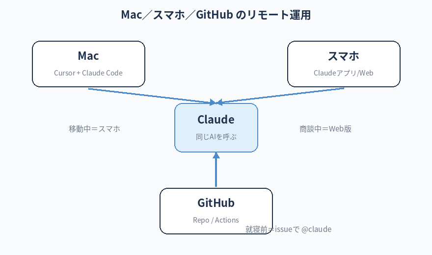

Mac の前にいなくても、スマホやタブレットから AI に指示を出して作業を進めてもらう方法を知る。
通勤・出張・商談の合間など、本来は「待ち時間」だった時間を、AI に働いてもらう時間に変える。
リモート運用 — 出先からスマホで AI に動いてもらう
この章のゴール
「Mac の前」だけが仕事場じゃなくなる
絶対に覚える：リモート運用の用語
この章で出てくる、Mac の外から AI を動かす時の用語です。
Mobile Appモバイルアプリ
- 一言で
- iPhone / Android にインストールして使う Claude のアプリ（claude.ai のスマホ最適化版）
- たとえると
- 会話・音声入力・写真認識まで使える、いちばん手軽な相棒
- 関連
- claude.ai / 音声入力
claude.ai/codeクロード コード（Web 版）
- 一言で
- ブラウザから使える Claude Code の Web 版。スマホでもアクセスできる
- たとえると
- ターミナル不要で、リポジトリと接続して指示が出せる「クラウド版 Claude Code」
- 関連
- GitHub 連携 / PR 自動生成
GitHub Actionsギットハブ アクションズ
- 一言で
- GitHub に仕込んでおく自動実行の仕組み（push されたら何かする、issue が立ったら何かする、など）
- たとえると
- GitHub に住む「自動化ロボット」。Claude を呼べるように設定すると、issue で
@claudeと書くだけで動いてくれる - 関連
- workflow / .github/workflows/ / Secrets
@claude (mention)アット クロード／メンション
- 一言で
- GitHub の issue や PR コメントで
@claudeと書くと Claude を呼び出せる仕組み - たとえると
- Slack で人を呼び出すあのメンションと同じ感覚で、AI を呼べる
- 関連
- GitHub Actions / Anthropic API キー
Secretsシークレット
- 一言で
- GitHub に安全に保管できる秘密情報（API キーなど）
- たとえると
- GitHub の中の「金庫」。中身は誰にも見えず、Actions の中だけで使える。API キーは絶対にここに入れる（コードに直書き厳禁）
- 関連
- ANTHROPIC_API_KEY / 第7章のセキュリティ
ここまでの章では、Mac でターミナルを開いて Claude Code を動かす流れを学んできました。 でも実際の仕事は、移動中・打ち合わせの合間・夜寝る前のベッドの中でも、ふと「あ、これやっておきたい」と思う場面があるはずです。
そういう時のために、Claude や AI にはスマホ・タブレットから動かす方法がいくつか用意されています。 全部いきなり使う必要はありませんが、3つだけ知っておくと一気に楽になります。

方法 ①：Claude モバイルアプリ（一番手軽）
これは何？
Anthropic が出している Claude のスマホアプリ（iOS / Android）。
Web ブラウザの claude.ai と同じものを、スマホで快適に使えるアプリ版です。
何ができる
- 普通の Claude との会話（質問・相談・原稿作成）
- 音声入力で長文を打ち込む
- カメラで撮った写真を見せて「これ何？」「これ整理して」
- PDF や画像をアップロードして要約・分析
セットアップ
- App Store / Google Play で「Claude」と検索してインストール
- 会社支給アカウントでログイン
- すぐ使える
こんな時に効く
- 移動中：「明日のミーティングのアジェンダ案を3つ出して」
- 商談直後：「議事録を音声で吹き込むので、要点を整理して」
- 就寝前：「明日朝イチで送るメールの下書きを書いて」
機密情報の扱いは、Mac で使う時と同じルールです（第7章）。
取引先名・契約金額・顧客の個人情報などは、スマホでも貼り付けない。
出先だからといって油断しないこと。
方法 ②：Claude Code on the web（コードもスマホから）
これは何？
Anthropic が提供している ブラウザ版の Claude Codeです。
URL は claude.ai/code。
Mac でターミナルから起動する Claude Code と同じことが、ブラウザだけで・スマホからもできます。
何ができる
- GitHub のリポジトリと接続して、コードを Claude に編集してもらう
- そのままブラウザ上で結果を確認、PR（プルリクエスト）として作成
- Mac が手元になくても、リポジトリに対する変更を依頼できる
セットアップ
- ブラウザで
claude.ai/codeにアクセス - 会社支給アカウントでログイン
- 「Connect GitHub」で第11章で作った GitHub アカウントを連携
- 連携したリポジトリを選択して、指示を出す
こんな時に効く
- 会社のサイトに typo を見つけた → スマホから「
about.htmlの○○のスペル直して PR 作って」 - 商談中にクライアントから依頼があった → その場で「色を青に変えてプレビューを送って」
- 家から「忘れてた、〇〇章のリンクが切れてる、直して」
（claude.ai/code のスマホ画面で、リポジトリを選択した状態で）
指南書の第8章 hello-world の例で、見出しの色を深い緑に変えて、ブランチを作って PR にしてください。
指南書の第8章 hello-world の例で、見出しの色を深い緑に変えて、ブランチを作って PR にしてください。
数分後、GitHub に PR ができあがります。Mac の前に戻ってから、内容を確認してマージするだけ。
方法 ③：GitHub × Claude Code（issue や PR から呼ぶ）
これは何？
GitHub のリポジトリに Claude Code を仕込んでおくと、
issue や PR のコメントで @claude とメンションするだけで Claude が動いてくれます。
何ができる
- issue に「@claude これを直して」と書くと、自動で PR を作ってくれる
- PR レビューに「@claude このコードのテストを書いて」と書くと、テストを追加した PR を返してくれる
- GitHub のスマホアプリから直接使えるので、移動中でも操作できる
セットアップ（一度だけ・社内エンジニアと一緒に）
これは初心者だけで完結させるのは少し手間がかかるので、社内のエンジニアと一緒にセットアップすることをおすすめします。 大まかな流れだけ紹介します：
- リポジトリに
.github/workflows/claude.ymlを追加 - GitHub Secrets に
ANTHROPIC_API_KEYを登録 - これで
@claudeメンションが効くようになる
Claude Code を GitHub Actions として使うための初期設定を、初心者向けに教えてください。
具体的には .github/workflows/claude.yml の最小サンプルと、必要な GitHub Secrets の登録手順をステップごとに。
Poolside ではセキュリティを重視するので、第7章の方針も踏まえて注意点を書いてくれると嬉しいです。
具体的には .github/workflows/claude.yml の最小サンプルと、必要な GitHub Secrets の登録手順をステップごとに。
Poolside ではセキュリティを重視するので、第7章の方針も踏まえて注意点を書いてくれると嬉しいです。
GitHub Actions で Claude を動かす場合、API キーがアクションログに漏れないよう 必ず Secrets として登録します。
社外公開の Public リポジトリでこの仕組みを使う時は、特に慎重に（第7章の「やってはいけない」リストを再確認）。
Anthropic API の従量課金は、必ず居村に相談してから使ってください。
GitHub Actions 経由の利用は、issue が立つたび・PR が作られるたびに API を消費します。 悪意ある外部からの spam で大量にトリガーされると請求が膨らむ事故が起きえます。 第1章の「お約束」のとおり、契約・予算・利用範囲は事前に居村と握ってから動いてください。
GitHub Actions 経由の利用は、issue が立つたび・PR が作られるたびに API を消費します。 悪意ある外部からの spam で大量にトリガーされると請求が膨らむ事故が起きえます。 第1章の「お約束」のとおり、契約・予算・利用範囲は事前に居村と握ってから動いてください。
使い分けの早見表
| シーン | おすすめの方法 |
|---|---|
| 「考え事の壁打ち」「アイデア出し」「文章の下書き」 | ① モバイルアプリ |
| 「コードを直したい」「PR を作って欲しい」 | ② Claude Code on the web |
| 「issue で指示すると自動で PR が来る運用にしたい」 | ③ GitHub × Claude Code |
| Mac の前にいる、じっくり腰を据えて作業 | ターミナルの Claude Code（第6章〜） |
具体的な「出先運用」シナリオ
シナリオ A：通勤電車の中で
Claude モバイルアプリを開く。
「今日の会議で言うべき、A案件のリスク3点を整理して」と音声入力。
会社着くまでに整理されている。
シナリオ B：商談の合間（5分）
たった今クライアントから「サイトの色を秋っぽく変えたい」と言われた。
その場でスマホから claude.ai/code を開き、リポジトリを選んで 「TOP の色を秋色（暖色寄り）に変えて、プレビュー URL を返して」と頼む。
会議終わりにクライアントへ「こんな感じです」と URL で見せられる。
シナリオ C：寝る前のベッド
GitHub のスマホアプリから対象リポジトリの issue を開く。
「@claude README に最新の機能の説明を追記してください」とコメントするだけ。
朝起きると PR ができあがっている。
「Mac の前にいる時間 = 仕事の時間」じゃないのがこれからのスタンダードだ。 移動中、商談中、お風呂上がり——AI が動ける場面を、自分の生活の中にどんどん組み込んでいけ。
ただし機密情報の扱いだけは絶対にゆるめるな。 スマホは Mac よりずっと「人に見られる端末」だ。電車の中で取引先名を打ち込まないように。
本章のチェックリスト
最低限、①は実際にやってみてください。②③は社内環境と相談しながら進めて構いません。
チェック 0 / 5
次の章へ
次は最終章の Q&A です。トラブル時の対処と、AI に質問するコツを総ざらいします。